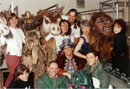

SpearheadNews.com
Super News
2003-2004

Auditions
Events
Rehearsal Schedules
Interviews
Photos
Reviews
More Fun Stuff!
The
Super Handbook
Tips, Tricks, and FAQs
San
Francisco Opera
Links
Classifieds
Contacts
Archives
Members Only
Spearheadnews.com is not officially affiliated with any
performing arts organization.
All photographs remain the property of their copyright holders.
©2003 SpearheadNews
All Rights Reserved
From the Vault -
Die Zauberflöte - (1991)
Here are the Supers from an earlier incarnation of the Hockney Magic
Flute (the second one during the 1991 Mozart Bicentennial Festival
Summer Season). At that time the Supers shared the stage with a luxurious
cast that included Ruth Ann Swenson, Jerry Hadley, Sally Wolf, and then-newcomers
Patricia Racette, Laura Claycomb and Catherine Keen.
It is not Spearhead policy to attach full names to photographs
so here in the tradition of anonymous Twelve-Step Programs are (left to
right) Stephanie S, Andrea K, Louis S, Renee D J, Kimberly T, Carolyn
W, Harrison P, Mike P and Doug C.
For relative newcomers to SFO Supering, Harrison Pierce (second from
left, bottom row in the dragon costume) was Super Captain from 1990
to 1992
(preceding Albert Goodwyn).He
moved briefly from Super Captain to the Development Department but sadly
passed away from AIDS in 1993. Harrison was always extremely cheerful,
even through the rigors of coordinating the massive number of Supers
in
the 1991 production of War and Peace and was much missed. His
friend Doug Couture (third from left) gave a eulogy at Harrison’s
Memorial in the Shakespeare Garden at Golden Gate Park, which was attended
by many members of the Company. Doug went on to dress Supers for a couple
of seasons before moving to New York City. Many thanks to Andrea for
submitting the photograph.
(Click on the photo for a larger image).